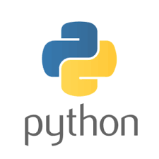

學歷


程式技能
Html
80%

CSS
60%

Python
30%

Java
20%

C++
10%

專業項目
棒球
90%
其他球類運動
70%
街舞
30%
算數
50%
日文
10%
韓文
10%
課程活動
企業概論
企業概論對我來說是一門很特別的課程，一開始聽到我以為是像講課一樣把一些企業相關的知識告訴我們，結果我們竟然要直接幫助我們的廠商賣東西；
這是我們當時販賣產品的IG，我們的合作夥伴是桃園的方舟啟智教養院，販賣的產品是蛋捲。
管理學
管理學聽起來就好像是要教有關管理方面的東西，應該可以說經理總經理那類的，但是還有一項成績是期中期末報告，得知這個報告是要讓我們去做志工學東西的時候還蠻驚喜的，沒想到管理學也會有這種有趣活動；
這是我們去大園後厝港淨灘的照片，在這次的淨灘中發現海洋垃圾真的是有夠多的，我們撿了有十幾公斤的垃圾，甚至時間到了都還沒撿完呢！！！
社團活動
軟式棒球社
棒球是我最喜歡的運動之一，也是我打最久的一種球類，更是我最擅長的球類運動，從國中開始就是學校球隊的成員，上了大學當然也有去甄選棒球校隊，但是沒被選上所以只好來軟棒社，不過參加軟棒社後發現在這裡比較有趣、好玩；
這是我大一的某一場對內友誼賽，棒球比賽聽起來就好像一定要分出勝負，不過友誼賽這種東西比到結束我們兩邊的分數都會是0分，因為對我們社團來說我們屬於享受棒球的部分，所以大家都玩得很開心。
嘻研社
國中的時候我就覺得跳街舞的人很酷，我原本是用自學的方式來練習街舞，後來發現自學的方式真的太慢了，所以就決定在大二加入了嘻研社的街舞組；
這是我加入嘻研社街舞組之後學會的招式之一，我還有學會很多招式，但都還處於一個初學者的階段，所以不是很厲害。
其他活動
系籃
我對球類相關的運動都很感興趣，而且籃球也算是從國小就有在玩的，所以我聽說系上有系籃的時候就想加入了，雖然我幾乎算是初學者，因為高中都在專心練棒球，也沒有太多的時間練習籃球；
這是我參加系籃的第一場比賽「新生盃」，雖然上場時間只有短短的一、兩分鐘，我還是覺得參加系籃蠻值得的。
系排
排球是我在高中第二喜歡的球類之一，也是我回憶最多的一種球類運動，所以我毫不猶豫地加入了系排；
這是我參加系排的第一場比賽「新生盃」，雖然我整個新生盃都在旁邊看，不過我還是有持續的認真練習，等待著下一次上場的機會。